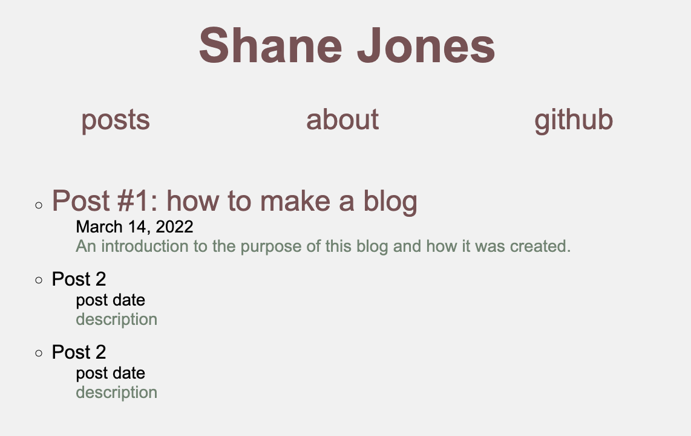

March 25, 2022
This blog project has been in the back of my mind for far too long, but I have finally managed to get an actual webpage up and running. I am definitely not too happy with how it is currently styled, but I wanted to focus on adding content to it before I finish designing the webpage's aesthetic. I think styling will be an ongoing effort throughout this project's lifespan. I am excited to see how the design changes over time, so I plan to document signficant changes I make. For reference, here is what the landing page originally looked like (what it looks like now):
I was able to make this website through GitHub Pages, and you can learn about how to do this yourself here.
What exactly is this blog for? I do not quite know as of now. The original goal was to document my job search process over the past 5 months, but it's a little late for that now so I plan to broaden the topics to general life updates. I want to mix in a variety of topics, ranging from technical coding question solutions to exciting trips I go on - really anything that I want to write about. I suppose I am thinking this blog will be a nice encapsulated archive to look back on in the future so I can better remember this time in my life. Even if I am only looking back a few years ago, sometimes it can be hard to recall what happened, so having a way to document these sorts of things will be nice for that.
I would not say I am amazing at website development, but I do think this project will very much help build some more technicial expertise in that area. For starters, I want to be, at the very least, competent with CSS, or Cascading Style Sheets. It is something I have really procrasinated, but, as tedious as it is to learn, I believe it will really payoff in the end.